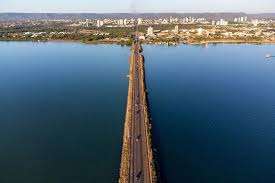

O Tocantins é o mais jovem estado do Brasil. Criado em 1988, tem Palmas como a sua capital. Apresenta na atualidade uma população de aproximadamente 1,5 milhão de habitantes e uma economia em ascensão. Os destaque ficam por conta da agricultura, comércio, serviços e indústria.
